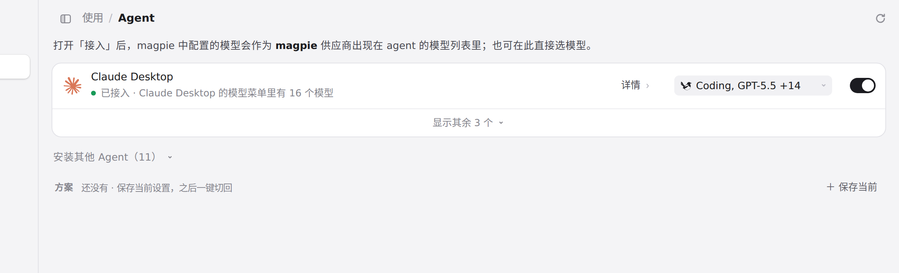

#1042 界面预览
commit 86976d2 · 回到 PR · diff 只改 macOS 主窗口的原生标题栏：在 macOS 26 的设计下摘掉 Wails 用来内嵌红绿灯的空 NSToolbar，让窗口改用普通标题栏的圆角，同时把红绿灯位置、标题栏高度、sheet 起始位置和「另一 App 在前时首次按下可拖动窗口」的行为保留成原来工具栏的样子；页面的 HTML/CSS/JS 与状态没有变化。

主窗口页头（macOS 上标题栏所在处） · 主窗口顶部的页头：macOS 上红绿灯就嵌在这一条里
 主窗口页头（macOS 上标题栏所在处） · 主窗口打开时的画面（浏览器渲染，看不到原生窗口的圆角和红绿灯）
主窗口页头（macOS 上标题栏所在处） · 主窗口打开时的画面（浏览器渲染，看不到原生窗口的圆角和红绿灯）